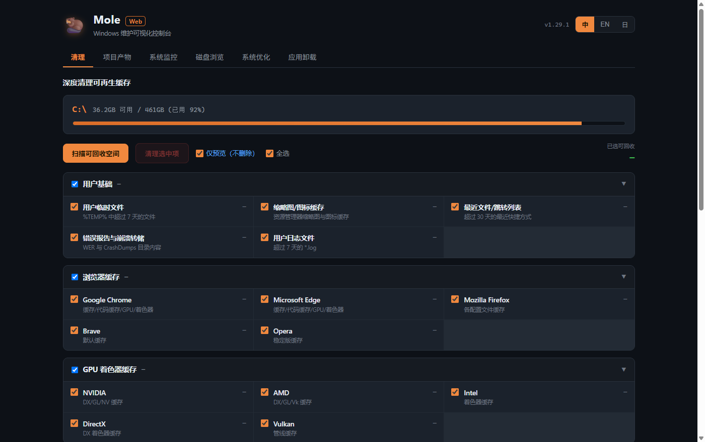
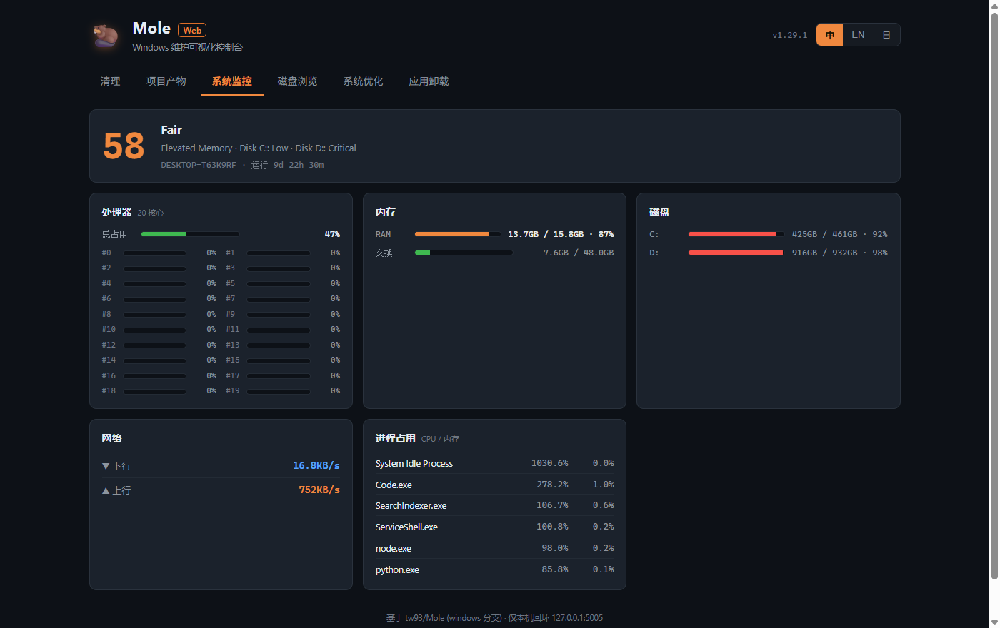

CCleaner、WinDirStat、IObit Uninstaller、任务管理器——四个工具的活，一个 Mole 全包。下载安装即用，无需安装任何依赖环境。

从日常清理到深度维护，覆盖 Windows 维护的方方面面。
用户/浏览器/GPU/应用/开发者/残留缓存，46 个类别一键扫描回收，删除前可预览。
一键清理 node_modules / target / dist / .next 等构建产物，按项目分组，开发者实测可回收 20GB+。
CPU 逐核、内存、磁盘、网络速率、Top 进程，附健康评分，2 秒刷新。
目录逐层钻取，大小条形可视化，快速定位"谁占了我的硬盘"，可直接删除。
刷新 DNS、重建图标缓存、重置 Winsock/商店、磁盘健康检查、sfc 修复，按需执行。
列出已装应用（含大小/发行商），过滤系统组件，一键调用原生卸载器彻底清除。
不只是又一个清理工具——更安全、更省心、更专业。
Python 运行时已内置进程序，下载安装包双击即用，无需配置任何环境，普通用户也能轻松上手。
内置受保护路径白名单 + 文件年龄阈值，删除前默认"仅预览"，永不触碰 Windows / System32 / 系统关键目录。
一键清空堆积的 node_modules、构建产物与 npm/pip/cargo/go 缓存，把几十 GB 硬盘空间还给你。
不止清理——CPU 逐核负载、内存/磁盘/网络、进程占用、系统健康评分一屏掌握。
中文 / English / 日本語 一键切换，trading-terminal 暗色设计，长时间使用不刺眼。
代码开源可审计，启动管理员权限解锁全功能，内置自动更新，永远用上最新版本。

每一次删除都经过受保护路径校验与年龄阈值过滤，系统目录（Windows、System32、Program Files、Defender）永远在白名单之外。所有破坏性操作默认"仅预览"，你看清要删什么、能回收多少，确认后才真正执行。
免费 · 开源 · 适用于 Windows 10 / 11（64 位）
⬇ 下载 Mole Setup v1.0.3（94 MB）双击安装包，可自选安装目录，一路下一步。
首次启动点击 UAC「是」，解锁全部维护功能。
先扫描预览可回收空间，确认后一键清理。